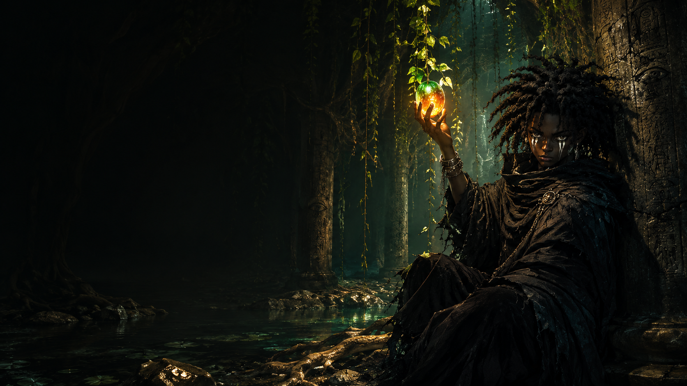
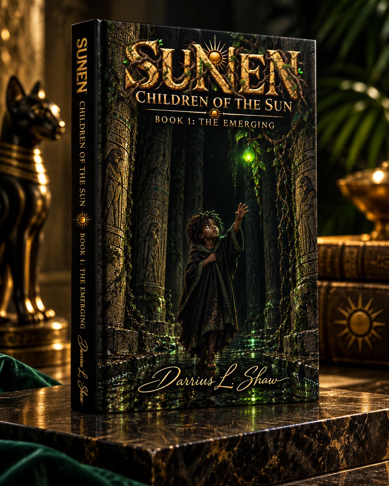

Volero
The land beneath the Red Sun.
The World Behind the Story
Before the children beneath the roots, there were six distant lands beneath six different suns. Before the Oasis became home, five worlds had already fallen.
The Infinite Sea
The realm of SUNEN rests upon an infinite flat ocean, with six great lands scattered across distances so vast that no land can see another sun from its coast.

Each land developed beneath a different sun. Over ages, the people, cultures, appearances, histories, and survival traits of those lands changed with the light above them.
The six peoples did not begin as one civilization. They were shaped separately, divided by impossible distances of ocean and by suns that belonged only to their own skies.
Long before the generations now living beneath Solaris, those distances were crossed only because survival left no other choice.
The land beneath the Red Sun.
The land beneath the Blue Sun.
The land beneath the Gold Sun.
The land beneath the White Sun.
The land beneath the Purple Sun.
The final land beneath the Green Sun.
The History That Was Buried
Long ago, something dark began moving across the infinite seas. What survived in memory would later be spoken of in fragments as the Eater of Suns.
The first great catastrophe began in Volero. Its people were forced from their homeland and onto the endless ocean, fleeing destruction and something that seemed to continue hunting them beyond their own world.
Volero's survivors crossed distances that once seemed impossible. They reached another land hoping the sea had carried them beyond the danger. It had not.
Each refuge became another place of flight. As the darkness arrived again, new survivors joined the exodus. What began as one people escaping became refugees from multiple suns traveling together across the infinite sea.
By the time the survivors reached Solaris, five lands had been destroyed. People from five different suns arrived at the final world believing they might finally have outrun what followed them.
They almost made it. But war reached Solaris. While conflict consumed the world above, survivors from all six peoples were driven beneath the land and sealed away from the sky.
The Generations Below
The people who escaped destruction did not return to the surface. Six clans remained underground while Solaris warred above them.
Generations passed beneath stone, roots, darkness, and the faint living glow of the Tellies. The children born below inherited rules of survival without fully inheriting the world those rules came from.
Their elders remembered fragments. Their descendants knew even less. The sky became something spoken about rather than seen.
And then a new generation began to change.

Where the Story Begins
The first volume begins generations after the six clans were buried beneath Solaris. The people below know how to survive their world—but much of the truth behind that world has disappeared.
Montu is born into that inheritance. As old histories surface and the buried world begins to change, his generation becomes the first in years to face questions their elders could never answer.